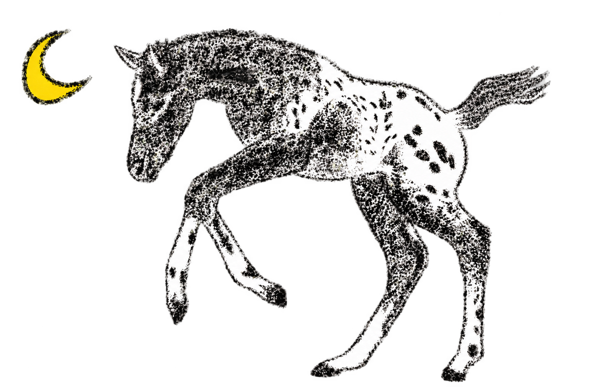
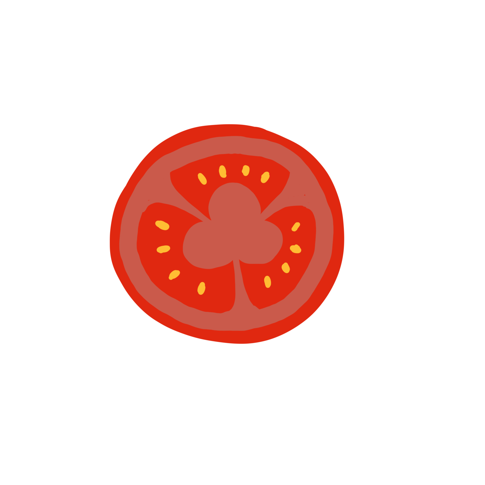
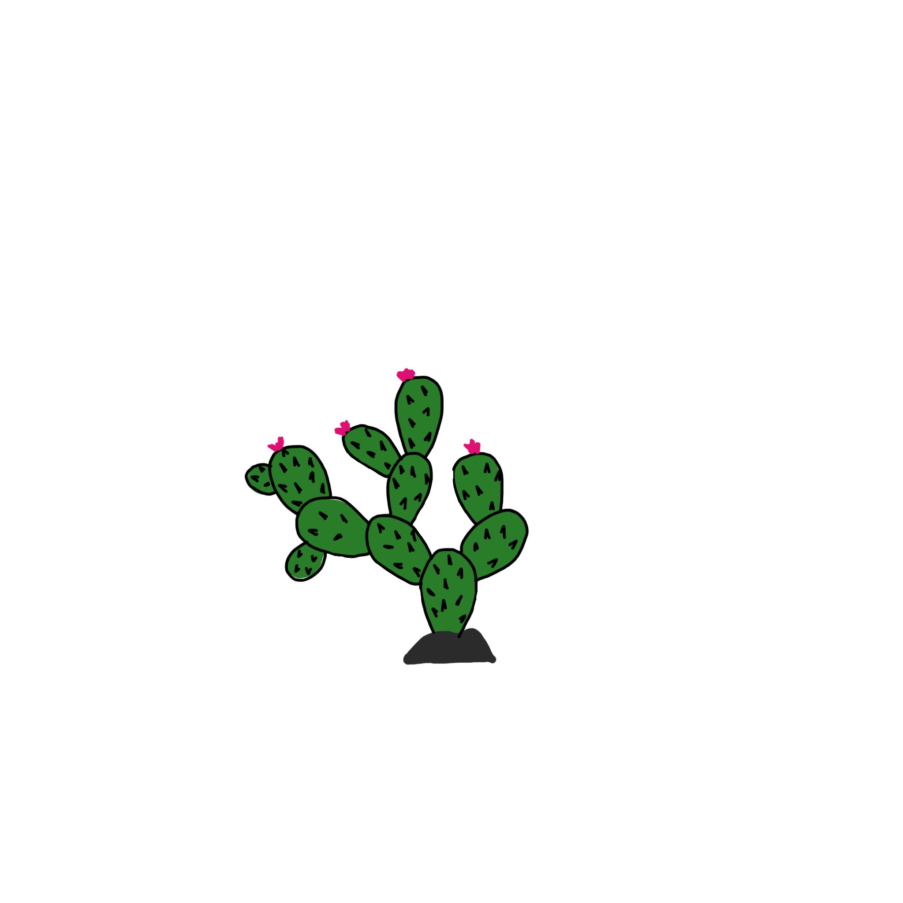
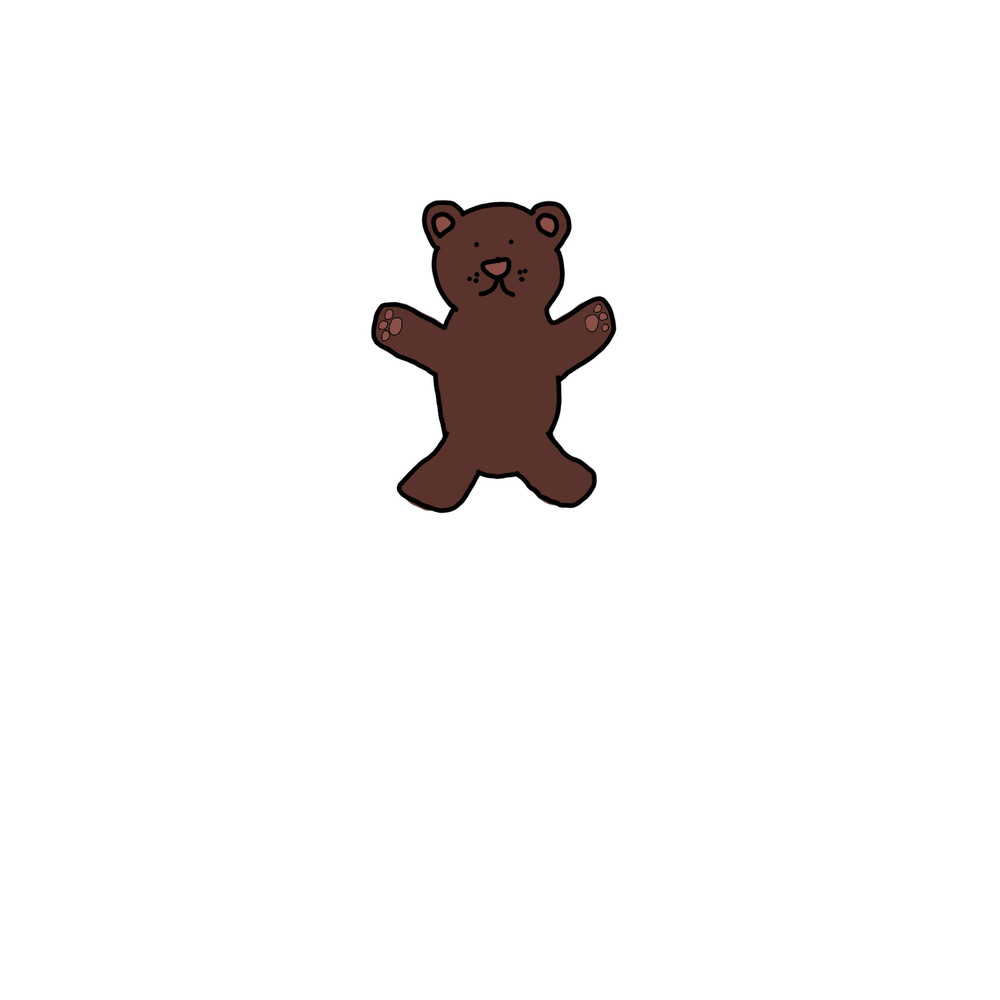
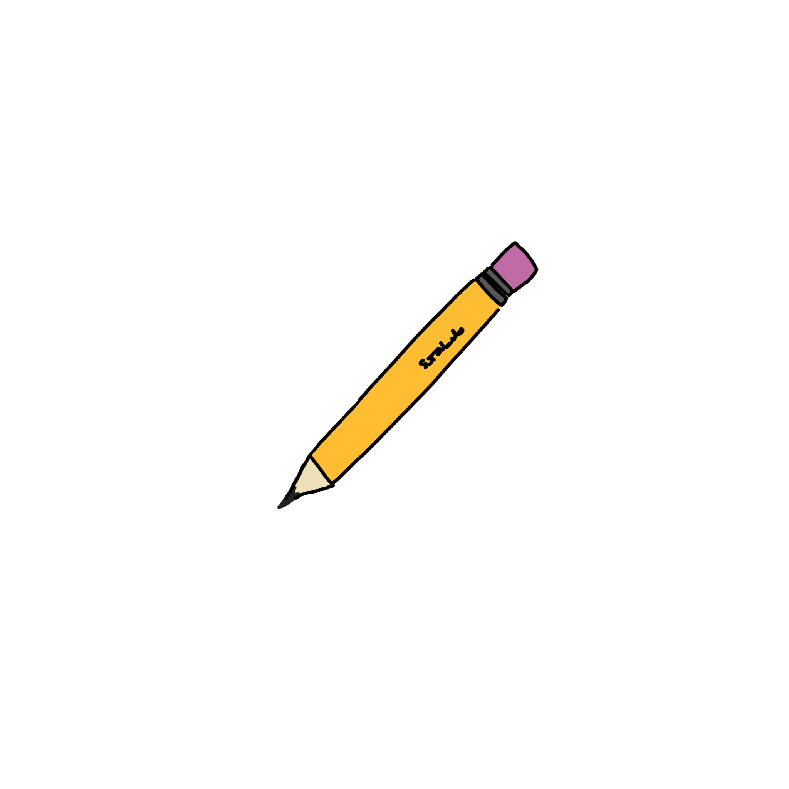
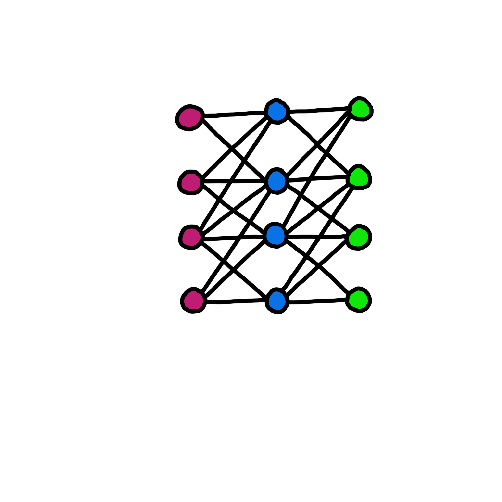
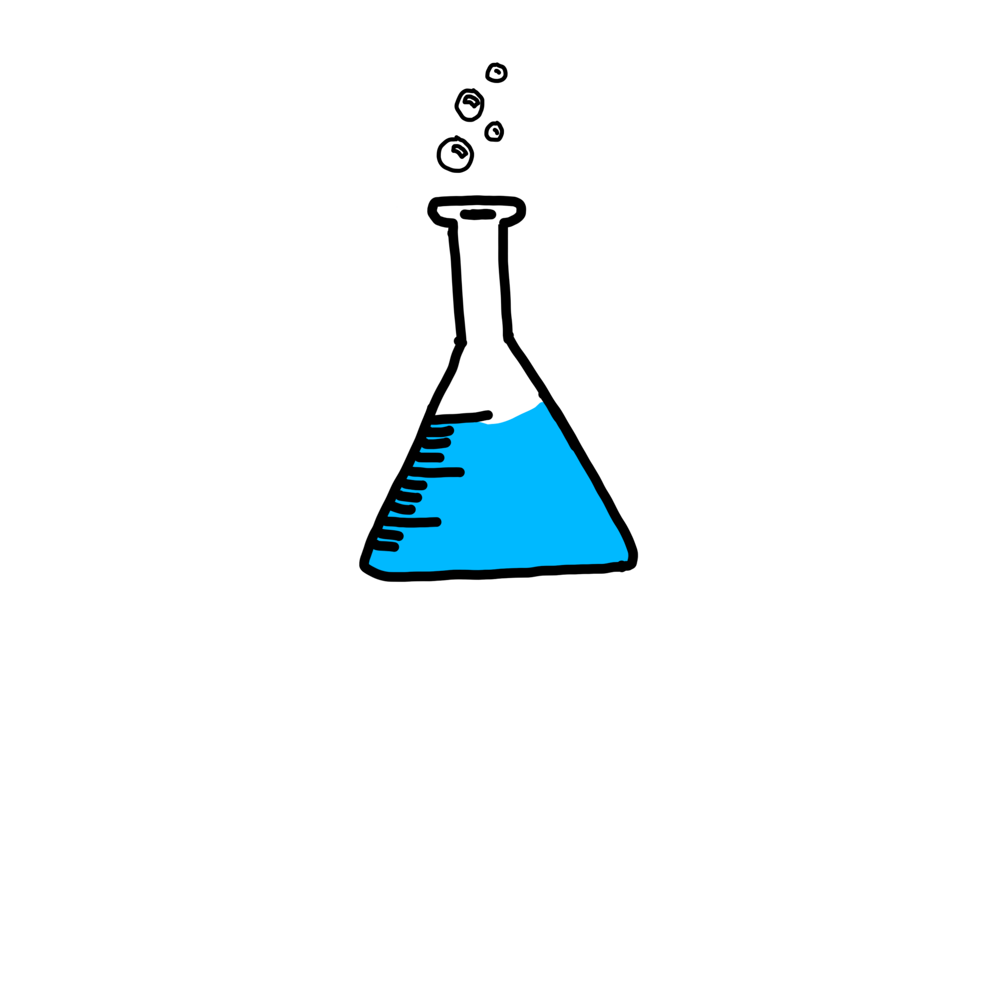

Adriana Vasquez
Hey there, I'm Adriana, a girl from Oaxaca, Mexico, currently based in London. I have a background in
Physics and Electrical Engineering and just graduated from Imperial where I did research in digital signal processing. I love to spend my free time going to
the city's museums, walking in the parks and trying new
restaurants. I also love to climb and spend time outdoors. I am obsessed with animals and nature and my
long term goal is to own a farm.
You can reach me at adrivcc gmail com

Founder & Solo Dev @ Cleo

PresentDesigned and built a mobile app using Lovable with a PostgreSQL backend on Supabase, leading end-to-end product development from architecture and UX to AI integration and data visulisation.
Writing @ Appaloosa

PresentA publication in English where I will be writing articles that investigate Mexican politics and economics, making Mexico a little bit more accessible for the English-speaking world
Portfolio @ GitHub 2023—Present
I'm familiar with different languages including Python, C, Javascript, Typescript, Matlab, SQL, HTML, and CSS. I am also familiar with libraries including TensorFlow, OpenCV, scikit-learn, Matplotlib, pandas, and Jupyter Notebooks.
Research @ Imperial College London 2024
For my Master's thesis, I implemented a special signal acquisition technique to improve the quality of ultrasound imaging. A short summary poster can be found here.
Operations @ Scale AI

2024Oversaw the production of machine learning data for a car manufacturer client. Was in charge of overseeing the full chain of operation, from training and managing a team of hundreds of annotators, to ensuring the quality of the data produced, to delivering the final product to the client.
Tutor @ H.A.N.D.S

June 2023—Dec 2023Taught math classes weekly, in Spanish, to adult Mexican immigrants who were striving to complete their high school education in The Bronx, New York City .
ML Researcher @ Universidad Iberoamericana

Jun 2023—Dec 2023Researched breast cancer diagnosis using Convolutional Neural Networks. Connected our academic lab with a local non-profit to access a dataset of mammograms of Mexican women, an important step in the research of underserved populations.
Materials Science Lab assistant @ Universidad Iberoamericana

Jan 2022—Jun 2022Synthesized nanomaterials for research purposes in their use as catalysts for hydrogen production.
Template adapted from © 2026 Coco Hernandez.